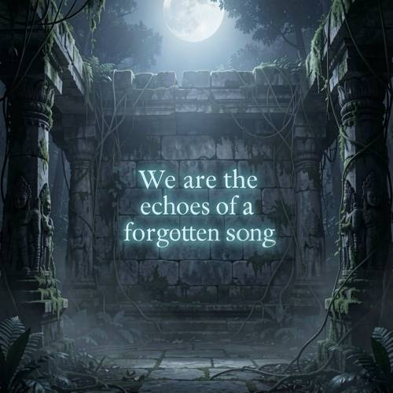
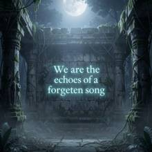
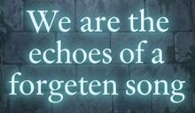
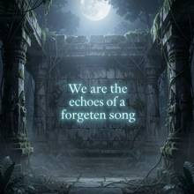
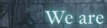
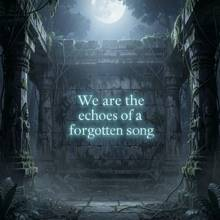
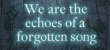

Text Generation — A forgotten ancient temple has a mysterious English inscription "We ar
A forgotten ancient temple has a mysterious English inscription "We are the echoes of a forgotten song" engraved on the wall, which glows in the moonlight.


Judge — Direct
- FAILText Generation — The image displays text on the temple wall, but it is misspelled. The text reads 'Waare the echoios of a forgeten song' instead of the prompted 'We are the echoes of a forgotten song'. Specifically, 'We are' is written as 'Waare', 'echoes' is misspelled as 'echoios', and 'forgotten' is misspelled as 'forgeten'.
- PASSGrammar - Pronoun Reference — The prompt states that the inscription 'which glows in the moonlight'. In the image, the inscription is indeed glowing with a yellow light. The scene is set at night with a large moon in the sky, providing moonlight that illuminates the ancient temple. The image correctly depicts the inscription as the object that is glowing.
Judge — Continuum
- PASSText Generation — The image displays the English text "We are the echoes of a forgotten song" on a stone wall. The text is rendered accurately with all words present and correctly spelled, although the letter 'o' in 'forgotten' has a minor graphical variation resembling a 'ə'.
- PASSGrammar - Pronoun Reference — The prompt states that the inscription 'which glows in the moonlight'. The image correctly interprets 'which' as referring to the inscription. The text "We are the echoes of a forgotten song" is depicted with a bright, luminous quality, giving it the appearance of glowing against the darker stone wall, consistent with the prompt's description.
What the agent did
Thinking
The task: generate an image of a forgotten ancient temple with an English inscription "We are the echoes of a forgotten song" engraved on a wall, glowing in moonlight. Text rendering must be verified. Use flux2-klein. Let me generate first.
Step 1 — `generate_image`
{
"model": "flux2-klein",
"prompt": "A forgotten ancient stone temple deep in a jungle at night, crumbling carved pillars and moss-covered walls bathed in pale silver moonlight from above. On one large central stone wall, an English inscription is deeply engraved in elegant serif capital letters, reading exactly: \"We are the echoes of a forgotten song\". The engraved letters glow softly with an ethereal cyan-white luminescence where moonlight strikes them. Vines creep over the stones, mist hangs in the air, atmosphere of mystery and ancient magic, cinematic wide shot, dark blue night palette."
}Result img_0

Thinking
At full scale, the text looks plausible: "We are the / echoes of a / forgeten song" — "forgoten" appears misspelled. Need to zoom to verify. Let me inspect the text region.
Model
The scene looks great, but the text may be misspelled. Let me zoom in to verify each word.
Step 2 — `inspect_region`
{
"image": "img_0",
"padding": 20,
"roi": "the glowing inscription text on the wall"
}Result img_1

Thinking
Zoomed: "We are the / echoes of a / forgeten song". "forgeten" — missing the 't' between 'forge' and 'ten'? The correct spelling is "forgotten": f-o-r-g-o-t-t-e-n. The rendered text shows "forgeten" — letters appear: f-o-r-g-e-t-e-n? Let me look: "forgeten" — there's "forge" then "ten". Actually the image shows "forgeten" which is wrong. Need to fix to "forgotten". Edit instruction: name the incorrect string and the correct one, don't re-describe the rest.
Model
The third line reads "forgeten" — the correct text should be "forgotten". I'll fix that with a targeted edit.
Step 3 — `edit_image`
{
"image": "img_0",
"model": "flux2-klein",
"prompt": "Fix the misspelled engraved word \"forgeten\" so the inscription's last line reads \"forgotten\" \u2014 the full glowing inscription must read exactly \"We are the echoes of a forgotten song\". Keep the same glowing engraved serif letter style on the stone wall."
}Result img_2

Thinking
Still looks like "forgeten" at this scale. Zoom in to verify.
Step 4 — `inspect_region`
{
"image": "img_2",
"padding": 20,
"roi": "the last line of the glowing inscription text"
}Step 5 — `inspect_region`
{
"image": "img_2",
"padding": 15,
"roi": [
220,
420,
560,
490
]
}Result img_3

Thinking
The coordinates were for the displayed 768x768? No — the image is 768x768, and the last line of text is around y 430-480, x 240-540. But the crop returned the first line "We are" region. The crop [220,420,560,490] returned "We are" — hmm, the crop shows "We are" at top. Maybe coordinates are in a different scale. The crop shows a wide thin region with "We are" visible. The actual image may be larger (768x768 display but source could be 1024?). Let me crop the bottom text area differently. Try [0.3, 0.55, 0.75, 0.65] normalized.
Step 6 — `inspect_region`
{
"image": "img_2",
"normalized": true,
"padding": 0.05,
"roi": [
0.28,
0.55,
0.74,
0.64
]
}Result img_4
Thinking
The last line still reads "forgeten song" — the edit did not fix it. The rendered word appears to be "forgeten" (f-o-r-g-e-t-e-n). Correct: "forgotten". Try another edit with a different seed, or regenerate. Since I shouldn't set seed (harness note says do not set seed — that's for the benchmark policy... "Do not set a seed. Sizes and seeds are controlled by the harness."). So I can just retry the edit, which randomizes the seed. Let me try the edit again with clearer instruction, perhaps isolating the word fix.
Model
The edit didn't fix the spelling — it still reads "forgeten". Let me try again with a more explicit instruction.
Step 7 — `edit_image`
{
"image": "img_2",
"model": "flux2-klein",
"prompt": "The engraved word \"forgeten\" on the bottom line is misspelled; replace those letters with the correctly spelled word \"forgotten\" (f-o-r-g-o-t-t-e-n) in the same glowing engraved serif style, so the line reads \"forgotten song\"."
}Result img_5

Thinking
Now it appears to read "forgotten song" at full scale. Verify with a zoom.
Model
That looks corrected. Let me zoom in to confirm the spelling of all three lines.
Step 8 — `inspect_region`
{
"image": "img_5",
"normalized": true,
"padding": 0.03,
"roi": [
0.25,
0.42,
0.75,
0.65
]
}Result img_6

Thinking
Zoomed view confirms: "We are the / echoes of a / forgotten song" — all correctly spelled. The scene: ancient temple, moonlight, glowing engraved inscription. Mark best and stop.
Step 9 — `mark_best`
{
"image": "img_5",
"reason": "All elements present: forgotten ancient jungle temple at night, moonlight from above, and the glowing engraved inscription verified letter-by-letter to read exactly \"We are the echoes of a forgotten song\"."
}Thinking
Done. Final summary.
Model
The image is complete. It shows a forgotten ancient temple deep in the jungle at night: - **Setting:** Crumbling moss-covered stone walls and carved pillars overgrown with vines, with a full moon shining through the canopy above, bathing the scene in pale silver-blue moonlight and mist. - **Inscription:** The English phrase **"We are the echoes of a forgotten song"** is engraved in elegant serif letters on the central wall, glowing with an ethereal cyan-white luminescence where the moonlight strikes it. I verified the text at full resolution after spotting and fixing a misspelling ("forgeten" → "forgotten"), so the final inscription is letter-perfect. The best version is marked.